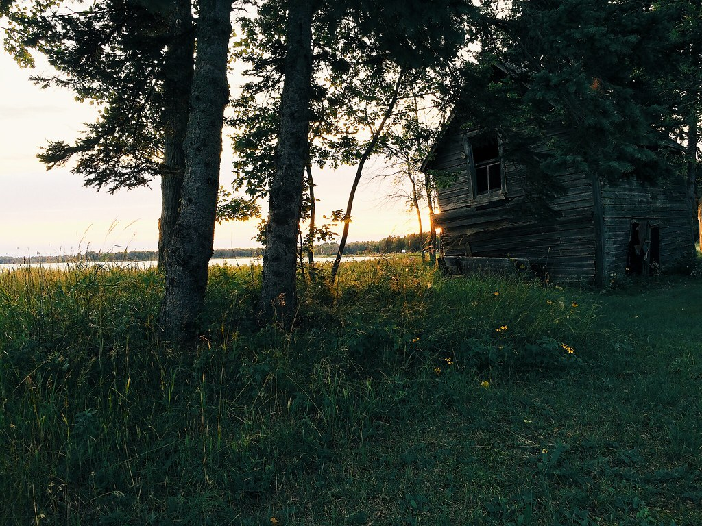
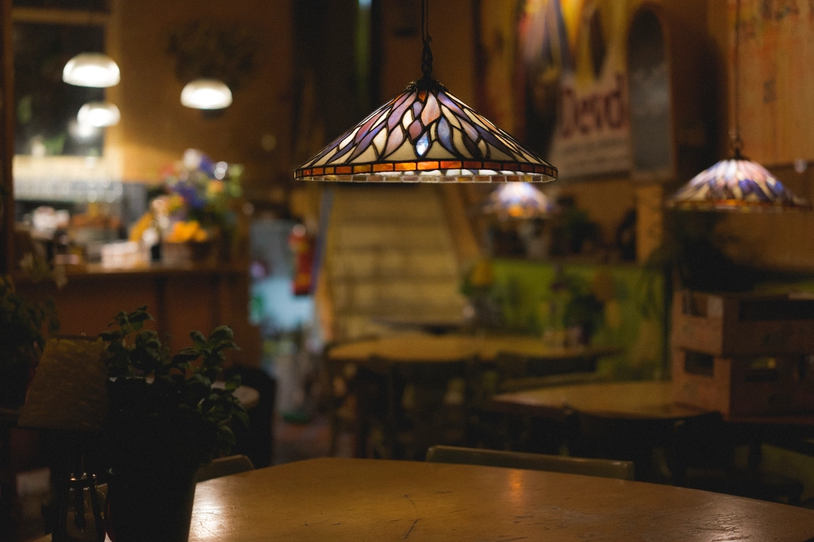
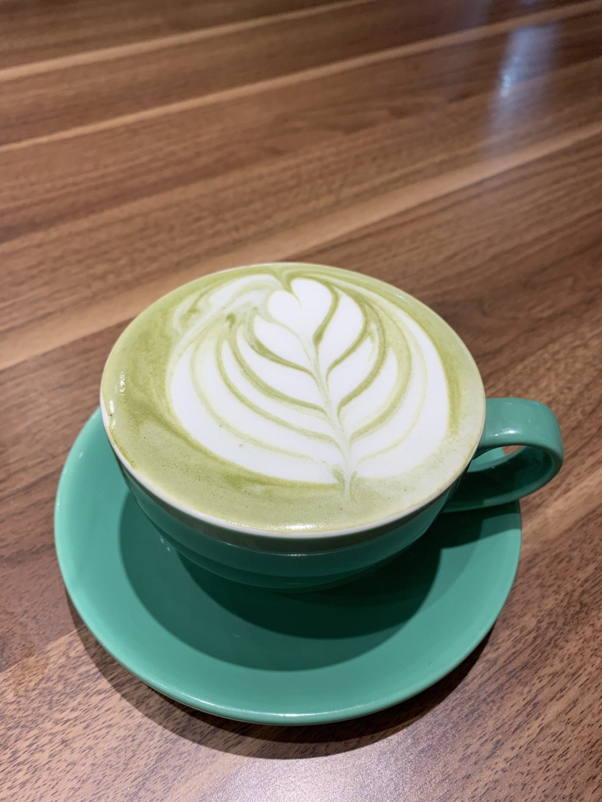
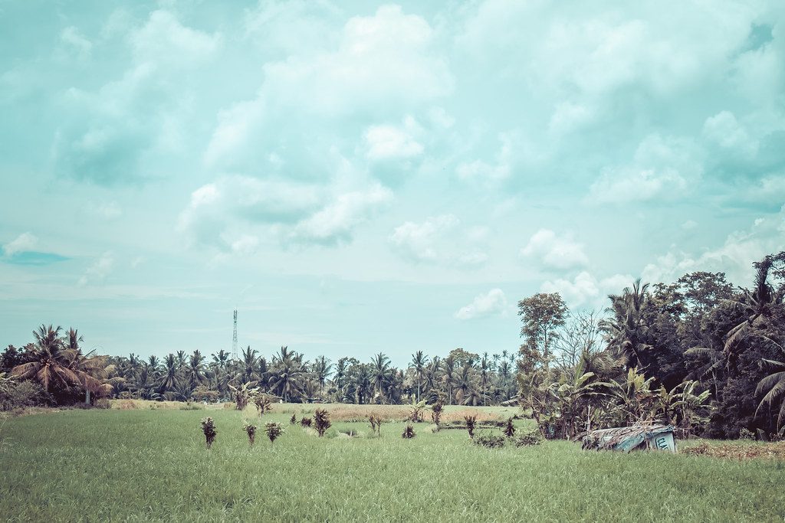
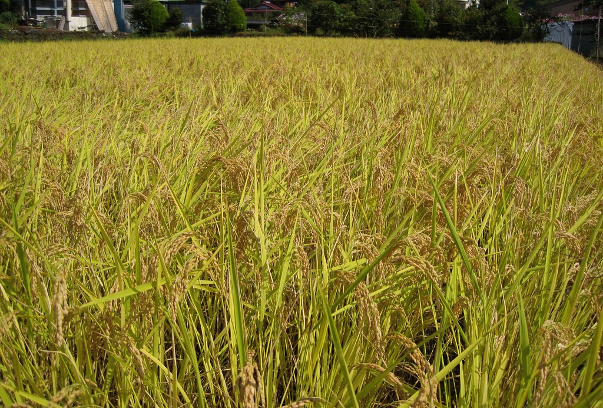

CAFE M-ALIE
田園に息づく、
田園に息づく、
静かな一杯。
宇治・小倉町天王。住宅街と田んぼに囲まれた、知る人ぞ知るカフェ。

ABOUT CAFE M-ALIE
このカフェについて
平等院や宇治茶の町並みから少し離れた、小倉町天王。住宅と田んぼが静かに隣り合うこの場所に、Cafe m-alie（カフェ マリエ）はあります。観光の合間に立ち寄るお店というより、暮らしの延長でふらりと訪れていただきたい――そんな気持ちで、窓の外に緑が広がる一席一席を整えています。宇治という茶処の空気を感じながら、ゆっくりと流れる時間をお楽しみください。



VOICE
お客様の声
イメージ例
お客様の声をもっと見る
静かな時間を求めて来店された方
住宅街と田んぼに囲まれた立地で、車の音もほとんど聞こえず驚くほど静かでした。窓の外に広がる緑を眺めながら、ゆっくり本を読む時間を過ごせました。
